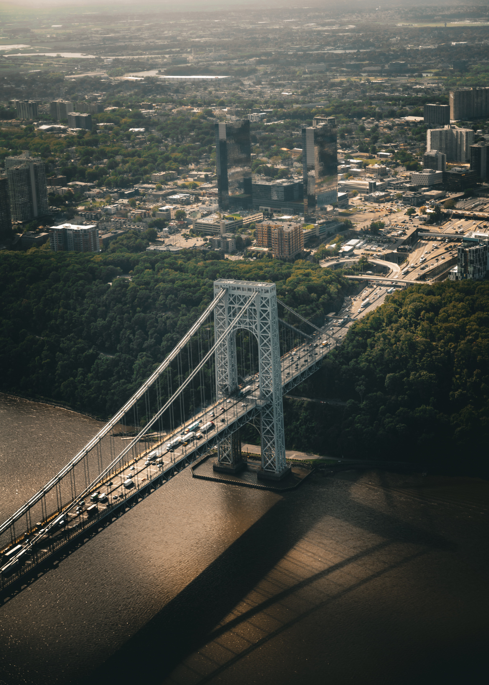
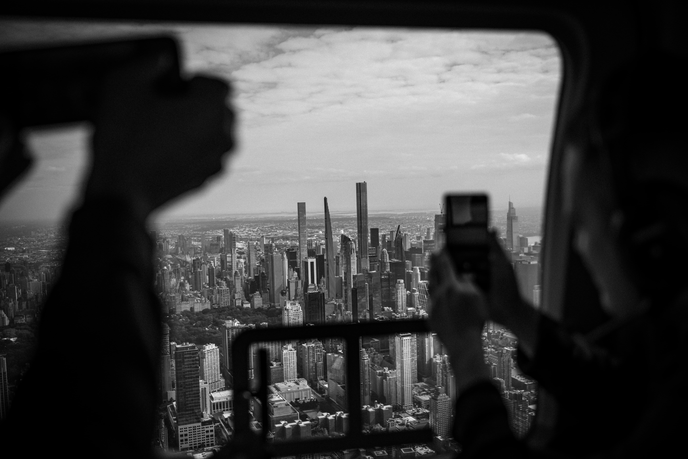
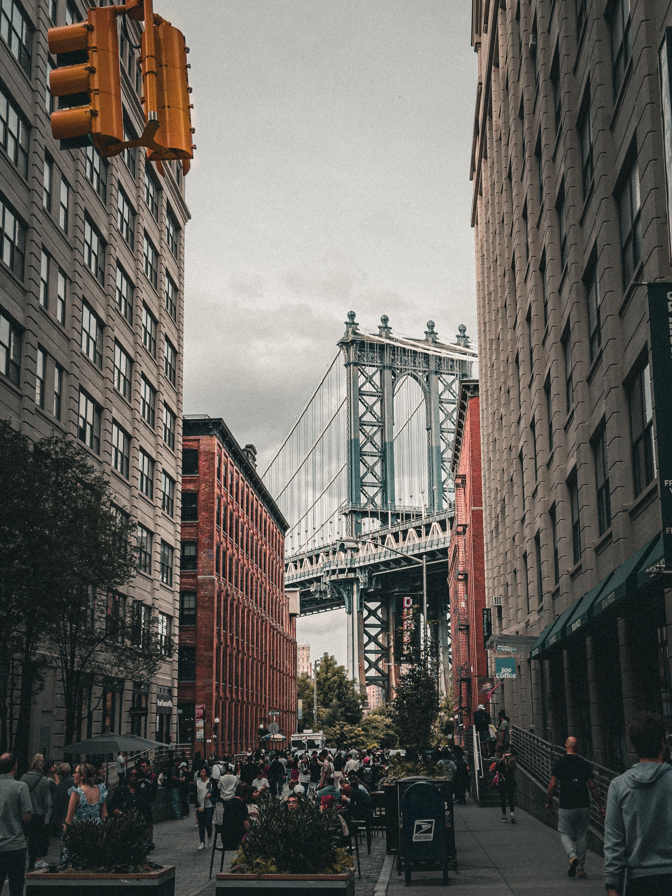
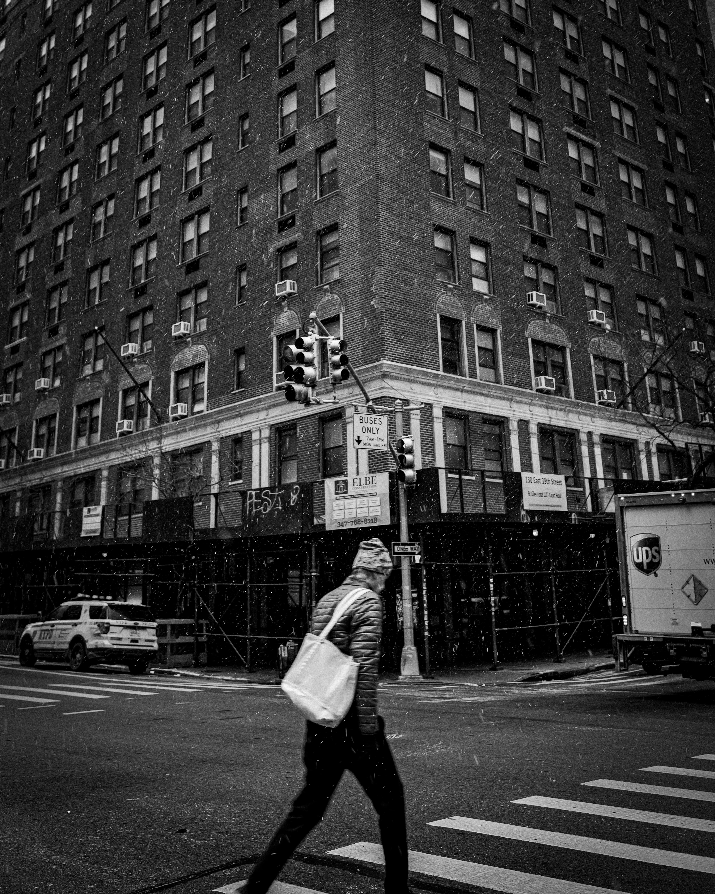
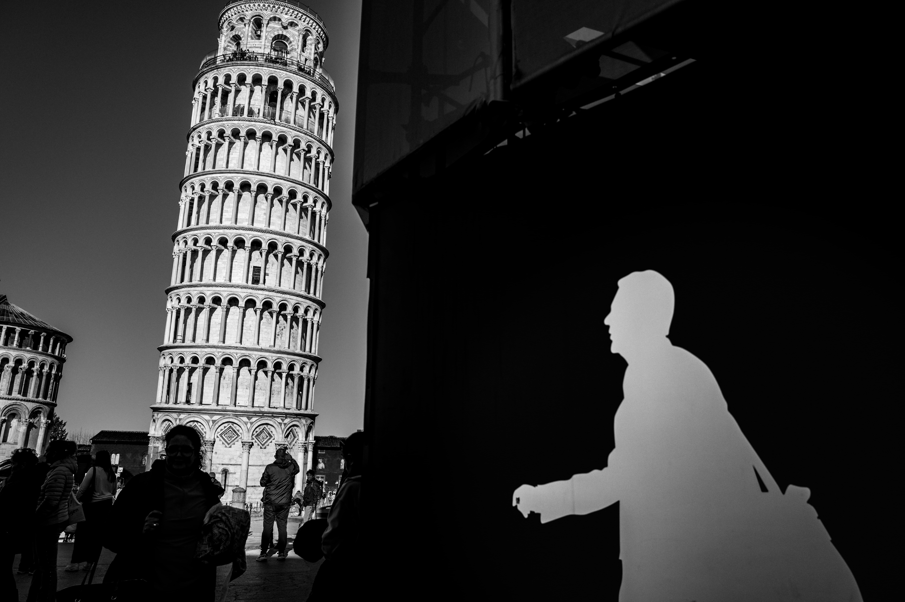

Portfolio / Architecture
Architecture
Architectural forms, surfaces and spaces seen through a restrained photographic language.










Portfolio / Architecture
Architectural forms, surfaces and spaces seen through a restrained photographic language.




